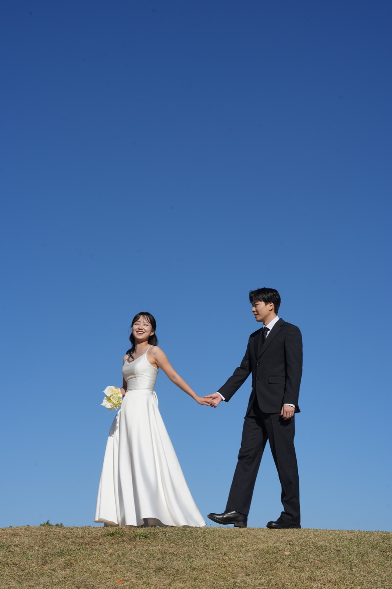
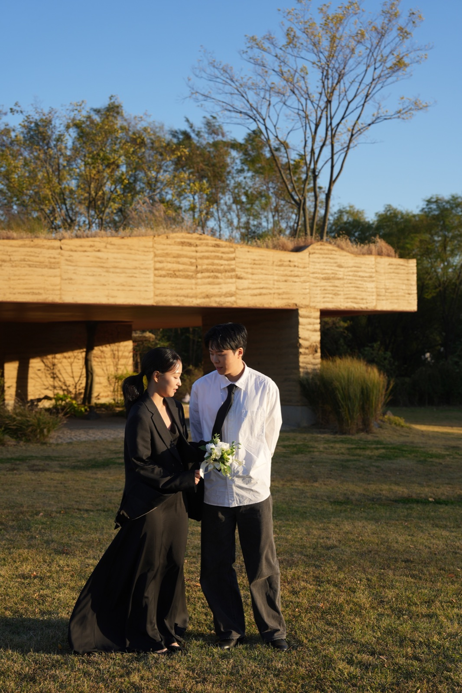

OUR NEXT CHAPTER
너와 나의 오늘이,
우리의 내일로.
서로의 하루를 다정하게 듣고,
작은 기쁨을 함께 발견하며
우리다운 행복을 만들어 가겠습니다.
이야기 문구는 임시 샘플입니다.

WE ARE GETTING MARRIED
JUNE 13, 2027
박우진 그리고 이정은
2027년 6월 13일 일요일 · 낮 12시 40분
DMC타워웨딩 2층 그랜드볼룸홀
INVITATION
함께 걷는 평범한 하루가
서로에게 가장 소중한 선물이 되었습니다.
이제 두 사람이 하나의 계절을 지나
오래도록 나란히 걸어가려 합니다.
저희의 첫걸음에 함께하시어
따뜻한 축복으로 자리를 빛내 주세요.
박봉만 · 김향송의 아들박우진
이승용 · 정미현의 딸이정은
OUR NEXT CHAPTER
서로의 하루를 다정하게 듣고,
작은 기쁨을 함께 발견하며
우리다운 행복을 만들어 가겠습니다.
이야기 문구는 임시 샘플입니다.
THE WEDDING DAY
낮 12시 40분
OUR LITTLE MOMENTS
가장 우리다운 순간들을 모았어요.
10 moments, one beautiful beginning.
사진을 누르면 크게 볼 수 있어요.
확대 화면에서는 좌우로 넘겨 주세요.
LOCATION
2층 그랜드볼룸홀
서울특별시 마포구 성암로 189
중소기업DMC타워
8번 출구 · 웨딩홀과 연결
6호선 · 공항철도 · 경의중앙선
디지털미디어시티역 8번 출구와 연결됩니다.
DMC타워 건물 주차장 이용
하객 무료 주차 2시간
주차 등록 방법은 추후 안내해 드립니다.
WITH GRATITUDE
함께해 주시는 따뜻한 마음에
깊이 감사드립니다.
KINDLY REPLY
귀한 걸음을 편히 모실 수 있도록
참석 여부를 미리 알려주시면 감사하겠습니다.
시안에서는 응답이 저장되거나 전송되지 않습니다.
A LETTER FOR YOU
소중한 날 함께해 주실 당신께,
작은 마음을 담아 두었어요.
한국 시간 6월 13일 0시에 열립니다.

Our forever starts here.